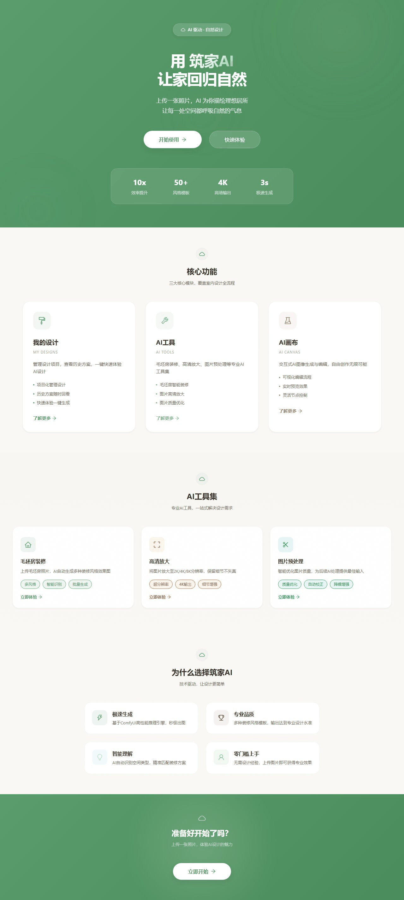
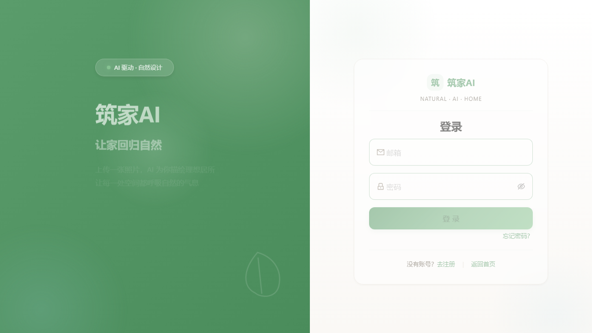
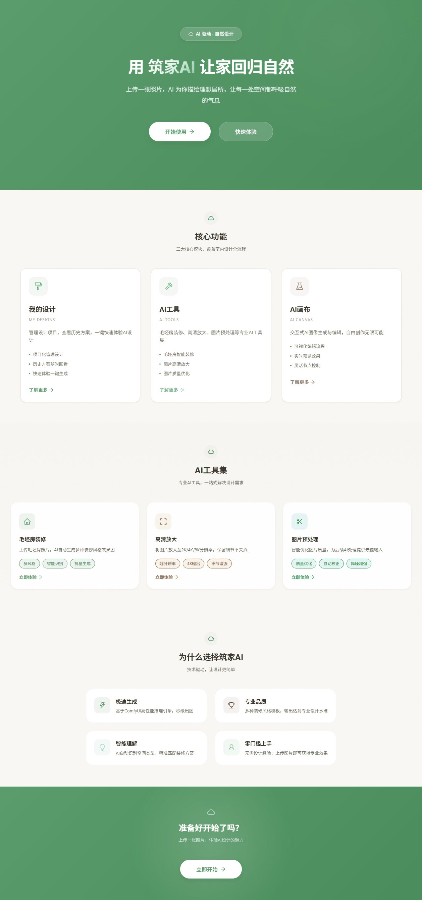
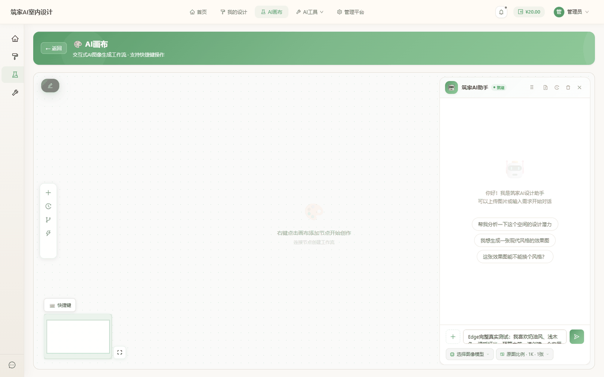
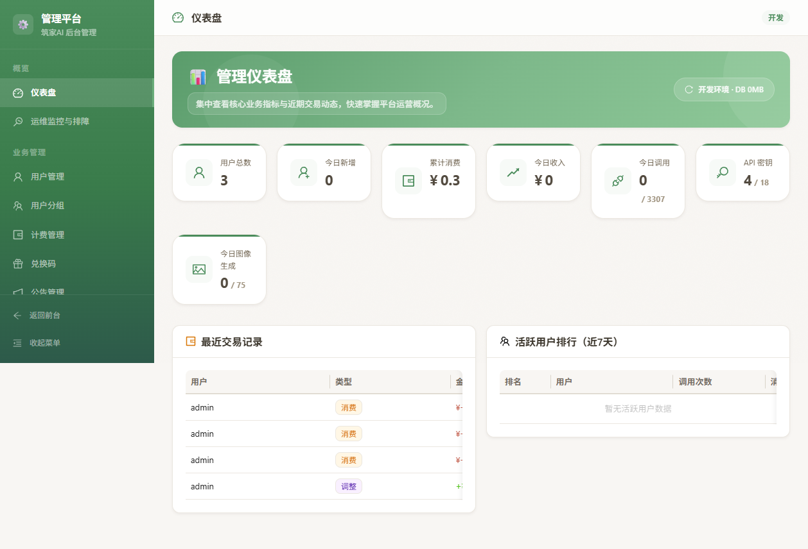
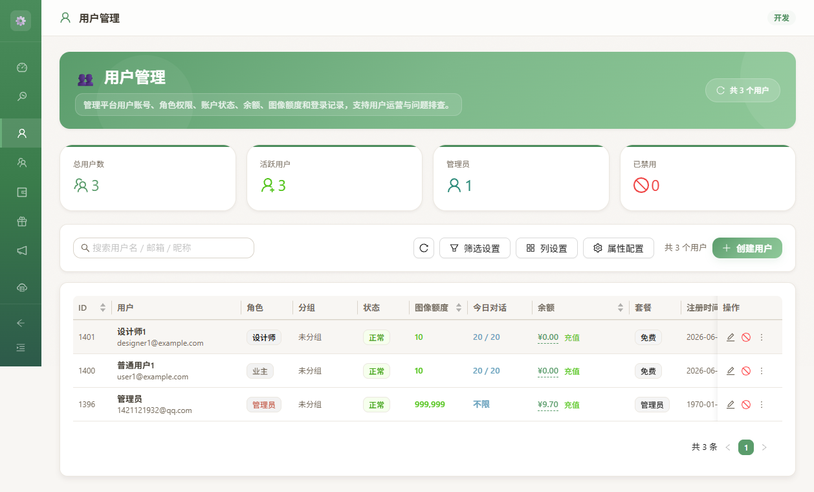
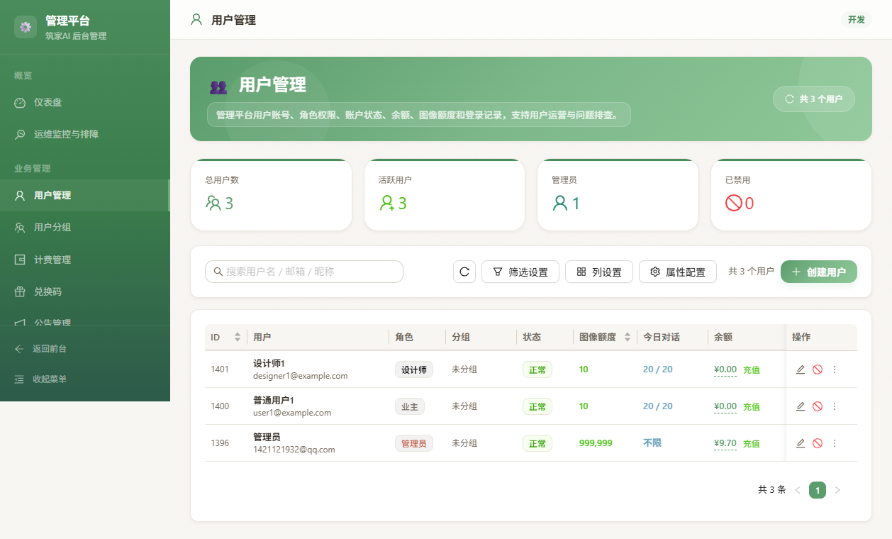
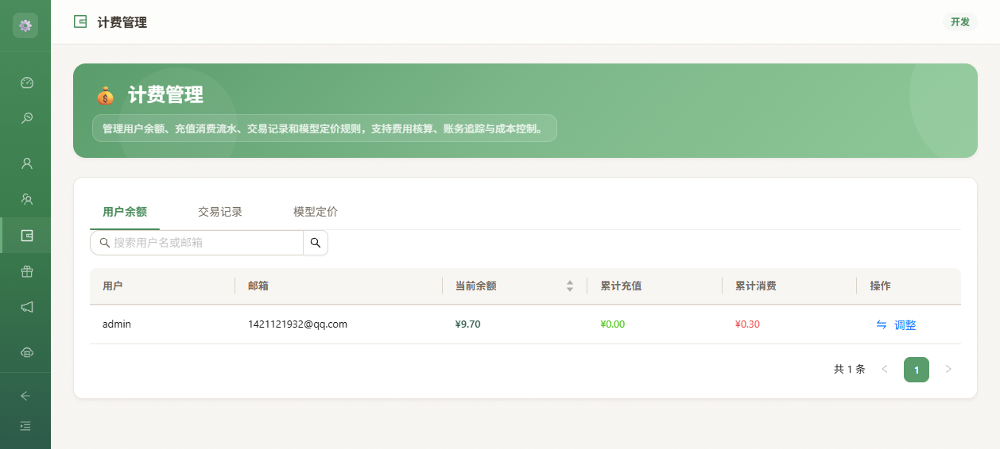
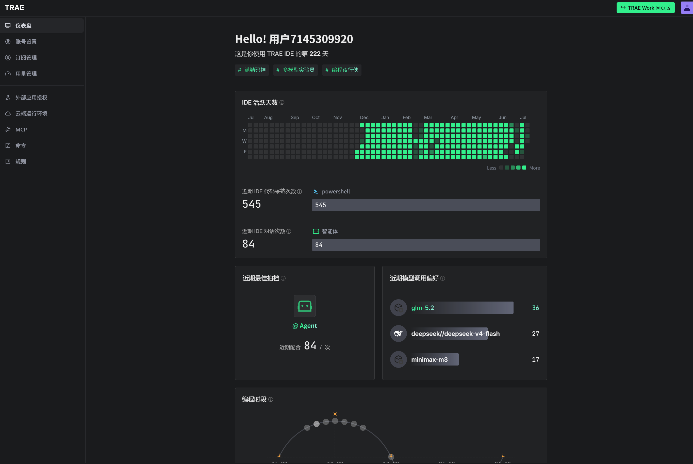
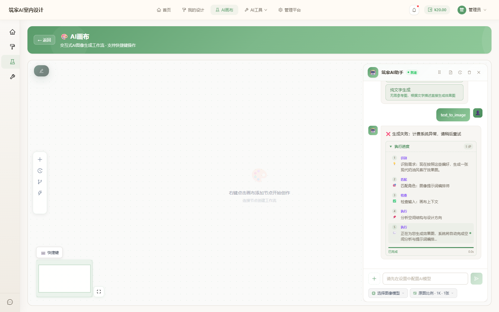

和 AI 对话，就能设计你的家
上传一张房间照片 · 3 分钟生成专业级室内设计效果图
不只是 Demo — 是一个经过 13228 行重构、540+ 测试、108 个问题全闭环的真实全栈产品
Web 全栈应用：React 19 + Vite 8 + Ant Design 6 前端，Flask 3 + Python 后端，PostgreSQL + Redis 数据层，ComfyUI 图像生成。支持 PC 浏览器访问。
准备装修的家庭、租房改造的年轻人、民宿经营者。不需要学 3D 软件，不需要请设计师，用自然语言就能完成专业级设计。
AI 对话设计 · 节点式画布协作 · 多模型路由 · ComfyUI 工作流 · 后台运营管理 · 安全计费 · 版本管理 · 全链路可追溯。
八大能力模块协同工作，覆盖室内设计全场景
自研 Agent 状态机：意图分类 → 工具调用 → ReAct 循环 → 质量门禁 → 会话记忆。支持多轮对话，上下文不丢失。
多模型路由引擎，自动选择最优模型。文生图、图生图、风格转换，支持通义千问/DeepSeek/火山引擎/ComfyUI。
基于 @xyflow/react 的节点式画布。4 类节点自由组合，拖拽连线，版本自动保存，导入导出。
完整运营后台：用户管理、计费、服务商配置、Agent 预设、ComfyUI 工作流、监控仪表盘、操作审计。
ALTCHA PoW 人机验证、CSRF 防护、API Key Fernet 加密、限流防护、SSRF 防护、并发扣费行锁。
基于 PostgreSQL 行级锁的并发安全计费。余额管理、消费记录、定价策略、配额管理、退款处理。
全部为项目当前真实运行界面（非设计稿），演示窗口使用浏览器风格









上线前 TRAE 资深导师（Senior Mentor）发现 5 个 P0 风险，全部由 AI 协作修复并通过 302 个测试验证
基于已完成的 Agent + 画布 + 工具框架，后续 7 阶段将系统升级为可扩展的 AI 室内设计平台
上传房间照片 → AI 生成设计效果图，一目了然

无需任何专业背景 · 普通人也能做专业设计
拍一张你想装修的房间照片，上传到画布。系统自动识别空间类型。
用自然语言描述需求：「现代简约风、浅色沙发、预算 5 万」。Agent 自动理解意图。
3 分钟内生成专业级室内设计效果图。支持多轮修改，随时切换风格。
所有方案自动保存到画布，拖拽对比不同风格，版本管理随时回退。
点击下方提示词，模拟真实对话流程 — 包含完整 5 步执行过程 + 生成效果图
职责清晰 · 安全可靠 · 可水平扩展
用户界面 · 画布交互 · 状态构建 · API 调用 · SSE 流式响应 · 226 个测试
API 路由 · 业务服务 · Agent 状态机 · 意图路由 · 计费 · 安全 · 540+ 个测试
连接池管理（20+ 并发）· 事务原子性 · 限流存储 · Schema 双轨维护
通义千问 / DeepSeek / 火山引擎多模型路由，ComfyUI 专业图像生成
7 个关键阶段 · AI 协作贯穿全程 · 100% SOLO 独立完成
从零搭建项目：React 19 + Vite 前端 + Flask 后端 + PostgreSQL 数据库。AI 帮助生成项目骨架、配置文件、数据库 Schema。
自研 Agent 状态机：意图分类器、规则链、工具注册表、ReAct 循环、质量门禁、会话记忆。13228 行超长文件拆分为 65 个职责清晰的子模块。
使用 @xyflow/react 构建节点式画布，开发上传节点、Agent 节点、图片节点、文本节点。实现拖拽连线、版本管理、工作流导入导出。
开发多模型路由引擎，接入通义千问、DeepSeek、火山引擎等模型。集成 ComfyUI 工作流，实现专业级 AI 图像生成。API Key 使用 Fernet 对称加密存储。
通过 TRAE IDE 进行多轮代码审查，发现并修复 108 个问题（5 P0 + 30 P1 + 73 P2/P3）。包括 7 个高危安全漏洞、12 项 P1 问题、280+ 处 P3 批量修复。
建立 540+ 后端测试 + 226 前端测试的完整测试体系。全部使用原生 PostgreSQL，覆盖认证、Agent、画布、计费、安全等核心链路。CI 安全门禁收紧，安全漏洞阻断合并。
建立完整的设计令牌系统：间距 11 档、字号 16 档、圆角 11 档、字重 4 档、过渡 3 档。629 处硬编码值 token 化，CSS 改造覆盖率 100%。
资深导师审查 → 5 个 P0 风险 → AI 自动修复 → 302 个测试通过。SSE 任务流迁移到 Redis Stream、幂等缓存迁移到 PostgreSQL、3 个内存泄漏/精度问题全部解决。
从产品设计、UI 实现、前后端开发、测试体系、安全治理到文档沉淀，1 人 + TRAE 对话（SOLO） 完成 13228 行核心代码、540+ 测试、108 个问题全闭环。